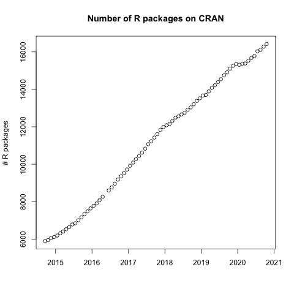

R Fundamentals II
R packages
Learning Objectives
- To be able to install and load R packages
R Packages
It is possible to add functions to R by writing a package, or by obtaining a package written by someone else. As of this writing, there are over 16,000 packages available on CRAN (the comprehensive R archive network). Their number increases every day:

R and RStudio have functionality for managing packages:
- You can see what packages are installed by typing
installed.packages() - You can install packages by typing
install.packages("packagename"), wherepackagenameis the package name, in quotes. - You can update installed packages by typing
update.packages() - You can remove a package with
remove.packages("packagename") - You can make a package available for use with
library(packagename)
Install and load the data.table package:
Packages can also be viewed, loaded, and detached in the Packages tab of the lower right panel in RStudio. Clicking on this tab will display all of installed packages with a checkbox next to them. If the box next to a package name is checked, the package is loaded and if it is empty, the package is not loaded. Click an empty box to load that package and click a checked box to detach that package.
Packages can be installed and updated from the Package tab with the Install and Update buttons at the top of the tab.